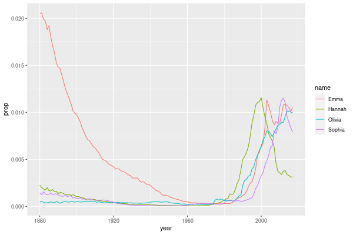
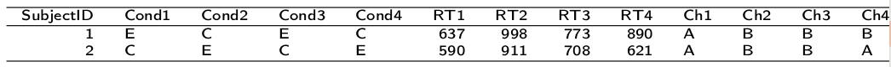
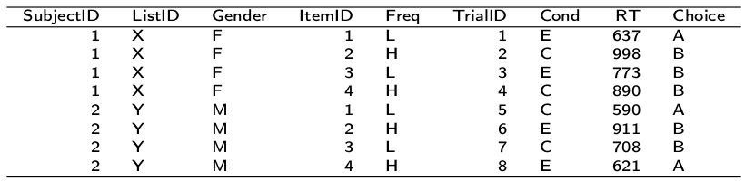
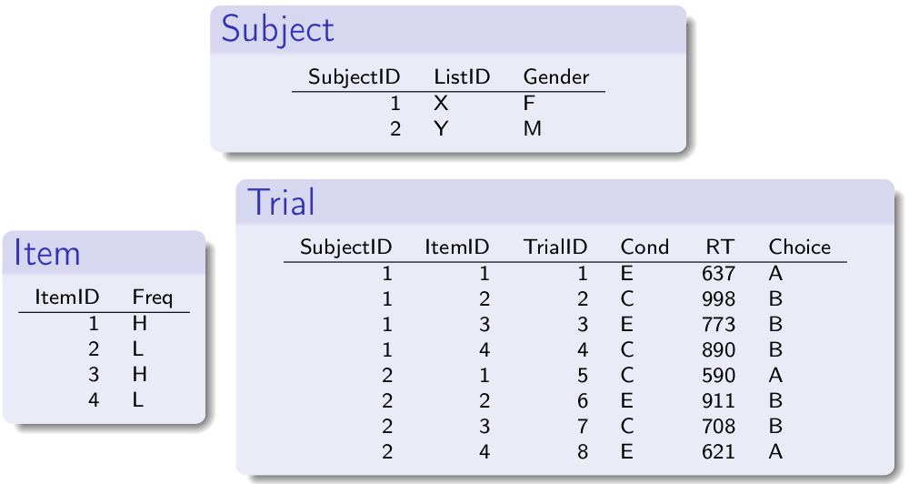
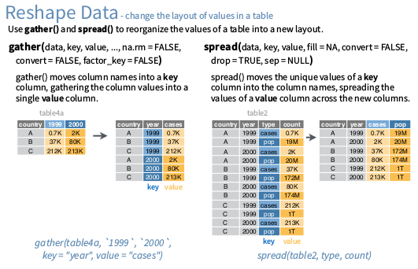

Introduction to data wrangling with the tidyverse
Table of Contents
- Background
- Operations on tables: The Way of the Wickham Six
- Stringing verbs together to form ’paragraphs’ in a pipeline
- A few additional tips
- Tidy data
- Combining information across tables:
dplyrtwo-table verbs
Background
Tabular data
Data comes in lots of different formats, but one of the most common formats is that of a two-dimensional table, where each row stands for a separate observation, and each column stands for a different variable. A key benefit of tabular data is that it allows you to store different types of data—numerical measurements, alphanumeric labels, categorical descriptors—all in one place.
In R, the two data primary structures that encode tabular data are the data.frame (from base R) and the tibble (from the add-on tibble package). Tibbles are a recent addition to R, and offer a number of improvements on data.frames that make them more powerful and easier to work with, but the principles you will learn in this lesson apply to both types. To learn more about the differences between a tibble and a data.frame, see vignette("tibble").
Be master of your data, or your data will be master of you
It may surprise you to learn that scientists actually spend far more of time cleaning and preparing their data than they spend actually analysing it. Indeed, some have estimated that up to 80% of time spent on data analysis involves data preparation (Dasu & Johnson, 20031), including among other things cleaning up bad values, changing the structure of tables, merging information stored in separate tables, reducing the data down to a subset of observations, and producing data summaries.
Many people seem to operate under the assumption that the only option for data cleaning is the painstaking and time-consuming cutting and pasting of data within a spreadsheet program like Excel. I have witnessed students and colleagues waste days, weeks, and even months manually transforming their data in Excel, cutting, copying, and pasting data, labour that more suitable for a mindless robot than for someone with an advanced degree. Fixing up your data by hand is not only a terrible use of your time, but it is error-prone and not reproducible.
While doing things by hand might be acceptable and easier for small datasets, the by-hand approach does not scale to large datasets. In this age where we can easily collect massive datasets online, you will not thrive as a scientist if you do not learn some key data wrangling skills. Although every dataset presents unique challenges, there are some systematic principles you should follow that will make your analyses easier, less error-prone, more efficient, and more reproducible.
In this lesson you will see how data science skills will allow you to efficiently get answers to nearly any question you might want to ask about your data. It will seem to go slowly while you are learning, but soon enough, you will experience huge gains in efficiency. Moreover, your research will become more transparent and reproducible, because you can easily share all the data processing stages in a very easy-to-understand format.
The babynames database
To demonstrate the power of these dplyr verbs, we will work with the babynames data from the babynames add-on package. The babynames dataset has historical information about births of babies in the U.S. (For more local color check out the ukbabynames package, which has babynames from the UK.) We will also need the ggplot2 package so that we can make some cool graphs.
Load in the packages by typing the following lines at the top of a new R script. Don’t forget to send the commands to the console window using Ctrl-Enter, or the rest of the commands in this lesson will fail!
The package babynames contains an object of the same name which we can get information about by printing it to the console:
babynames
# A tibble: 1,924,665 x 5
year sex name n prop
<dbl> <chr> <chr> <int> <dbl>
1 1880 F Mary 7065 0.0724
2 1880 F Anna 2604 0.0267
3 1880 F Emma 2003 0.0205
4 1880 F Elizabeth 1939 0.0199
5 1880 F Minnie 1746 0.0179
6 1880 F Margaret 1578 0.0162
7 1880 F Ida 1472 0.0151
8 1880 F Alice 1414 0.0145
9 1880 F Bertha 1320 0.0135
10 1880 F Sarah 1288 0.0132
# … with 1,924,655 more rows
The table we are looking at is a tibble with information on five variables over 1.8 million rows. Yes, this dataset contains 1.8 million observations. Interested in analyzing these data by hand?
Fortunately, the print() rules for tibbles means that only the first 10 rows of this dataset will be displayed.2
Each row in the table represents data about births for a given name and sex in a given year. The variables are:
| variable | type | description |
|---|---|---|
| year | double (numeric) | year of birth |
| sex | character | recorded sex of baby (F = female, M = male) |
| name | character | forename given to baby |
| n | integer | number of babies given that name |
| prop | double (numeric) | proportion of all babies of that sex |
So the first row of the table…
year sex name n prop
<dbl> <chr> <chr> <int> <dbl>
1 1880 F Mary 7065 0.07238359
…tells us that in the year 1880, there were 7065 baby girls born in the U.S. who were given the name Mary, and this accounted for about 7% of all baby girls.
A motivating example
The snippet of code below won’t make sense to you at this point, so don’t worry about not understanding it yet! The point is just to motivate you by showing how much you can accomplish with very little code. The code below creates a graph showing the popularity of four girl babynames—Emma, Olivia, Sophia, and Hannah—from 1880 to 2014. Cut and paste the code into a new R script and run it yourself. Make sure you have the dplyr, ggplot2 and babynames packages installed on your system. You can plug in different names if you like and see how the plot changes.
library("tidyverse") library("babynames") dat <- babynames %>% filter(name %in% c("Emma", "Olivia", "Sophia", "Hannah"), sex == "F") ggplot(dat, aes(year, prop, colour = name)) + geom_line()

Operations on tables: The Way of the Wickham Six
Hadley Wickham (@hadleywickham), a world-famous data scientist and the primary force behind many of the add-on packages you will be learning to use, has claimed that 90% of data analysis can be reduced to the operations described by six English verbs.
select() |
Include or exclude certain variables (columns) |
filter() |
Include or exclude certain observations (rows) |
mutate() |
Create new variables (columns) |
arrange() |
Change the order of observations (rows) |
group_by() |
Organize the observations into groups |
summarise() |
Derive aggregate variables for groups of observations |
These six verbs are also the names of functions in Wickham’s brilliant dplyr add-on package. They are known as ’single table verbs’ because they only operate on one table at a time. In your next lab, you will learn two-table verbs that you can use to merge tables together. Although the operations of these functions may seem very simplistic, it’s amazing what you can accomplish when you string them together.
select(): choosing which variables to keep
Now, of the two numeric measurements of name popularity, prop is probably more useful than n because it takes into account that different numbers of babies are born in different years. If we wanted to create a data set that included everything but the variable n, we could do this using the dplyr::select() function.
select(babynames, year, sex, name, prop)
# A tibble: 1,924,665 x 4
year sex name prop
<dbl> <chr> <chr> <dbl>
1 1880 F Mary 0.0724
2 1880 F Anna 0.0267
3 1880 F Emma 0.0205
4 1880 F Elizabeth 0.0199
5 1880 F Minnie 0.0179
6 1880 F Margaret 0.0162
7 1880 F Ida 0.0151
8 1880 F Alice 0.0145
9 1880 F Bertha 0.0135
10 1880 F Sarah 0.0132
# … with 1,924,655 more rows
The first argument to the select() function is a tibble, and further arguments are the names of columns you want to include. But sometimes all you want to do is exclude a single column, and select() allows you to do that while saving typing by putting a minus sign in front of the column:
select(babynames, -n)
# A tibble: 1,924,665 x 4
year sex name prop
<dbl> <chr> <chr> <dbl>
1 1880 F Mary 0.0724
2 1880 F Anna 0.0267
3 1880 F Emma 0.0205
4 1880 F Elizabeth 0.0199
5 1880 F Minnie 0.0179
6 1880 F Margaret 0.0162
7 1880 F Ida 0.0151
8 1880 F Alice 0.0145
9 1880 F Bertha 0.0135
10 1880 F Sarah 0.0132
# … with 1,924,655 more rows
Note that select() does not change the original tibble, but makes a new tibble with the specified columns. If you don’t save this new tibble to a variable, it will be printed to the console and lost forever. So if you want to keep it around, assign it to a variable, e.g., bbn <- select(babynames, -n).
Another trick is to select columns by column number (i.e., ordinal position) in the table rather than by name. For instance
select(babynames, 3)
# A tibble: 1,924,665 x 1 name <chr> 1 Mary 2 Anna 3 Emma 4 Elizabeth 5 Minnie 6 Margaret 7 Ida 8 Alice 9 Bertha 10 Sarah # … with 1,924,655 more rows
Selects the third column name from the table. Likewise, select(babynames, -3) selects everything but the third column.
A few select() tricks
- selecting a range of columns
You can select a range of columns using the
:operator. From the intro materials, you may recall that1:5gives the integer sequence 1 to 5.[1] 1 2 3 4 5
You can use the colon with select to select a range. You can even use
:with names instead of integer positions. For instance:select(babynames, name:prop)
# A tibble: 1,924,665 x 3 name n prop <chr> <int> <dbl> 1 Mary 7065 0.0724 2 Anna 2604 0.0267 3 Emma 2003 0.0205 4 Elizabeth 1939 0.0199 5 Minnie 1746 0.0179 6 Margaret 1578 0.0162 7 Ida 1472 0.0151 8 Alice 1414 0.0145 9 Bertha 1320 0.0135 10 Sarah 1288 0.0132 # … with 1,924,655 more rows
gives the same thing as
select(babynames, 3:5)
# A tibble: 1,924,665 x 3 name n prop <chr> <int> <dbl> 1 Mary 7065 0.0724 2 Anna 2604 0.0267 3 Emma 2003 0.0205 4 Elizabeth 1939 0.0199 5 Minnie 1746 0.0179 6 Margaret 1578 0.0162 7 Ida 1472 0.0151 8 Alice 1414 0.0145 9 Bertha 1320 0.0135 10 Sarah 1288 0.0132 # … with 1,924,655 more rows
- weird column names
Sometimes you load in a file and the column names are not legal names for R variables. They may have spaces or other special characters. You can reference the weird variables by escaping them between backticks, like so:
select(dat, `my weird column name!`). This may be easier than referencing the column number. Another tip is to use tab completion (start typing the first few characters, then press TAB) so that you don’t make a typo when typing a long variable name. - renaming columns
You can rename columns ’on the fly’ during select using the syntax
newname = oldname. For example:select(babynames, birth_year = year, sex, child_name = name, number_of_babies = n, proportion = prop)# A tibble: 1,924,665 x 5 birth_year sex child_name number_of_babies proportion <dbl> <chr> <chr> <int> <dbl> 1 1880 F Mary 7065 0.0724 2 1880 F Anna 2604 0.0267 3 1880 F Emma 2003 0.0205 4 1880 F Elizabeth 1939 0.0199 5 1880 F Minnie 1746 0.0179 6 1880 F Margaret 1578 0.0162 7 1880 F Ida 1472 0.0151 8 1880 F Alice 1414 0.0145 9 1880 F Bertha 1320 0.0135 10 1880 F Sarah 1288 0.0132 # … with 1,924,655 more rowsor, if you want to select all columns while renaming one or more, use
rename()instead ofselect().rename(babynames, birth_year = year, number_of_babies = n)
# A tibble: 1,924,665 x 5 birth_year sex name number_of_babies prop <dbl> <chr> <chr> <int> <dbl> 1 1880 F Mary 7065 0.0724 2 1880 F Anna 2604 0.0267 3 1880 F Emma 2003 0.0205 4 1880 F Elizabeth 1939 0.0199 5 1880 F Minnie 1746 0.0179 6 1880 F Margaret 1578 0.0162 7 1880 F Ida 1472 0.0151 8 1880 F Alice 1414 0.0145 9 1880 F Bertha 1320 0.0135 10 1880 F Sarah 1288 0.0132 # … with 1,924,655 more rows - ’fronting’ a column or columns
If you want to just get a column or columns in the first position, without having to type all of the column names, type the column names to put in front, followed by the
everything()helper function.## put babynames and prop first select(babynames, prop, everything()) ## equivalent to: ## select(prop, year, sex, name, n)
# A tibble: 1,924,665 x 5 prop year sex name n <dbl> <dbl> <chr> <chr> <int> 1 0.0724 1880 F Mary 7065 2 0.0267 1880 F Anna 2604 3 0.0205 1880 F Emma 2003 4 0.0199 1880 F Elizabeth 1939 5 0.0179 1880 F Minnie 1746 6 0.0162 1880 F Margaret 1578 7 0.0151 1880 F Ida 1472 8 0.0145 1880 F Alice 1414 9 0.0135 1880 F Bertha 1320 10 0.0132 1880 F Sarah 1288 # … with 1,924,655 more rowsSee
?selectfor more helper functions (e.g.,starts_with(),ends_with(), etc).
Exercises with select()
- Use
select()to make a table that looks like this from the built-instarwarsdataset
# A tibble: 87 x 4 name eyes home species <chr> <chr> <chr> <chr> 1 Luke Skywalker blue Tatooine Human 2 C-3PO yellow Tatooine Droid 3 R2-D2 red Naboo Droid 4 Darth Vader yellow Tatooine Human 5 Leia Organa brown Alderaan Human 6 Owen Lars blue Tatooine Human 7 Beru Whitesun lars blue Tatooine Human 8 R5-D4 red Tatooine Droid 9 Biggs Darklighter brown Tatooine Human 10 Obi-Wan Kenobi blue-gray Stewjon Human # … with 77 more rows
select(starwars, name, eyes = eye_color, home = homeworld, species)
- Renaming a weird column
Download the
infmort.csvfile, put it in your working directory and load it into the variableinfmort. This is data from the World Health Organization on infant mortality. The first few rows of the data file look like this:Country,Year,Infant mortality rate (probability of dying between birth and age 1 per 1000 live births) Afghanistan,2015,66.3 [52.7-83.9] Afghanistan,2014,68.1 [55.7-83.6] Afghanistan,2013,69.9 [58.7-83.5] Afghanistan,2012,71.7 [61.6-83.7] Afghanistan,2011,73.4 [64.4-84.2]
Look at the table. Then rename the column that begins with “Infant mortality rate” to a legal R variable name.
infmort <- read_csv("infmort.csv") glimpse(infmort) rename(infmort, IMR = `Infant mortality rate (probability of dying between birth and age 1 per 1000 live births)`)
── Column specification ──────────────────────────────────────────────────────── cols( Country = col_character(), Year = col_double(), `Infant mortality rate (probability of dying between birth and age 1 per 1000 live births)` = col_character() ) Rows: 5,044 Columns: 3 $ Country <chr> … $ Year <dbl> … $ `Infant mortality rate (probability of dying between birth and age 1 per 1000 live births)` <chr> … # A tibble: 5,044 x 3 Country Year IMR <chr> <dbl> <chr> 1 Afghanistan 2015 66.3 [52.7-83.9] 2 Afghanistan 2014 68.1 [55.7-83.6] 3 Afghanistan 2013 69.9 [58.7-83.5] 4 Afghanistan 2012 71.7 [61.6-83.7] 5 Afghanistan 2011 73.4 [64.4-84.2] 6 Afghanistan 2010 75.1 [66.9-85.1] 7 Afghanistan 2009 76.8 [69.0-86.1] 8 Afghanistan 2008 78.6 [71.2-87.3] 9 Afghanistan 2007 80.4 [73.4-88.9] 10 Afghanistan 2006 82.3 [75.5-90.7] # … with 5,034 more rows
arrange(): putting records in order
The dplyr verb arrange() will sort the rows in the table according to the columns you supply. Try it:
arrange(babynames, name)
# A tibble: 1,924,665 x 5
year sex name n prop
<dbl> <chr> <chr> <int> <dbl>
1 2007 M Aaban 5 0.00000226
2 2009 M Aaban 6 0.00000283
3 2010 M Aaban 9 0.00000439
4 2011 M Aaban 11 0.00000542
5 2012 M Aaban 11 0.00000543
6 2013 M Aaban 14 0.00000694
7 2014 M Aaban 16 0.00000783
8 2015 M Aaban 15 0.00000736
9 2016 M Aaban 9 0.00000446
10 2017 M Aaban 11 0.0000056
# … with 1,924,655 more rows
The data are now sorted in ascending alphabetical order by name. The default is to sort in ascending order. If we want it descending, we wrap the variable name in the desc() function. For instance, to sort by year in descending order:
arrange(babynames, desc(year))
# A tibble: 1,924,665 x 5
year sex name n prop
<dbl> <chr> <chr> <int> <dbl>
1 2017 F Emma 19738 0.0105
2 2017 F Olivia 18632 0.00994
3 2017 F Ava 15902 0.00848
4 2017 F Isabella 15100 0.00805
5 2017 F Sophia 14831 0.00791
6 2017 F Mia 13437 0.00717
7 2017 F Charlotte 12893 0.00688
8 2017 F Amelia 11800 0.00629
9 2017 F Evelyn 10675 0.00569
10 2017 F Abigail 10551 0.00563
# … with 1,924,655 more rows
We can sort by more than one column. arrange(dat, varname1, varname2, varname3, ..., varnameN) will sort by varname1, breaking ties by varname2, then break any further ties by varname3, etc.
Exercises with arrange()
- Arrange the
babynamesdataset in descending order by year with the most popular names for each year coming first
arrange(babynames, desc(year), desc(n))
# A tibble: 1,924,665 x 5 year sex name n prop <dbl> <chr> <chr> <int> <dbl> 1 2017 F Emma 19738 0.0105 2 2017 M Liam 18728 0.00954 3 2017 F Olivia 18632 0.00994 4 2017 M Noah 18326 0.00933 5 2017 F Ava 15902 0.00848 6 2017 F Isabella 15100 0.00805 7 2017 M William 14904 0.00759 8 2017 F Sophia 14831 0.00791 9 2017 M James 14232 0.00725 10 2017 M Logan 13974 0.00712 # … with 1,924,655 more rows
filter(): subsetting observations
Often what we want to do is to focus on some subset of observations;
say, only babies born after some year, or only babies named “Mary”. In other words, we want to pull out observations based on some arbitrary criteria. We do this using the verb filter(). The filter() function is a bit more involved than the other operators, and requires more detailed explanation, but this is because it is also extremely powerful. Can you guess what the following function call will do?
filter(babynames, year > 2000)
# A tibble: 562,156 x 5
year sex name n prop
<dbl> <chr> <chr> <int> <dbl>
1 2001 F Emily 25055 0.0127
2 2001 F Madison 22164 0.0112
3 2001 F Hannah 20712 0.0105
4 2001 F Ashley 16526 0.00835
5 2001 F Alexis 16401 0.00828
6 2001 F Sarah 15896 0.00803
7 2001 F Samantha 15862 0.00801
8 2001 F Abigail 14807 0.00748
9 2001 F Elizabeth 14784 0.00747
10 2001 F Olivia 13978 0.00706
# … with 562,146 more rows
The second argument in the above function call, year > 2000, is what is known as a Boolean expression: an expression whose evaluation results in a value of TRUE or FALSE. What filter() does is include any observations (rows) for which the expression evaluates to TRUE, and exclude any for which it evaluates to FALSE. So in effect, behind the scenes, filter() goes through the entire set of 1.8 million rows, row by row, checking the value of year for each row, keeping it if the value is greater than 2000, and rejecting it if it is less than 2000. To see how a boolean expression works, consider the code below:
years <- 1996:2005 years # print it out years > 2000 # compute and print the boolean expression 'years > 2000'
[1] 1996 1997 1998 1999 2000 2001 2002 2003 2004 2005 [1] FALSE FALSE FALSE FALSE FALSE TRUE TRUE TRUE TRUE TRUE
You can see that the expression years > 2000 returns a logical vector (a vector of TRUE and FALSE values), where each element represents whether the expression is true or false for that element. For the first five elements (1996 to 2000) it is false, and for the last five elements (2001 to 2005) it is true.
Here are the most commonly used Boolean expressions.
| Operator | Name | is TRUE if and only if |
|---|---|---|
| A < B | less than | A is less than B |
| A <= B | less than or equal | A is less than or equal to B |
| A > B | greater than | A is greater than B |
| A >= B | greater than or equal | A is greater than or equal to B |
| A == B | equivalence | A exactly equals B |
| A != B | not equal | A does not exactly equal B |
| A %in% B | in | A is an element of vector B |
If you want only those observations for a specific name (e.g., Mary), you use the equivalence operator. Note that we are using double equal signs (the equivalence operator), not a single equal sign.
filter(babynames, name == "Mary")
# A tibble: 268 x 5
year sex name n prop
<dbl> <chr> <chr> <int> <dbl>
1 1880 F Mary 7065 0.0724
2 1880 M Mary 27 0.000228
3 1881 F Mary 6919 0.0700
4 1881 M Mary 29 0.000268
5 1882 F Mary 8148 0.0704
6 1882 M Mary 30 0.000246
7 1883 F Mary 8012 0.0667
8 1883 M Mary 32 0.000284
9 1884 F Mary 9217 0.0670
10 1884 M Mary 36 0.000293
# … with 258 more rows
If you wanted all the names except Mary, you use the ’not equals’ operator:
filter(babynames, name != "Mary")
# A tibble: 1,924,397 x 5
year sex name n prop
<dbl> <chr> <chr> <int> <dbl>
1 1880 F Anna 2604 0.0267
2 1880 F Emma 2003 0.0205
3 1880 F Elizabeth 1939 0.0199
4 1880 F Minnie 1746 0.0179
5 1880 F Margaret 1578 0.0162
6 1880 F Ida 1472 0.0151
7 1880 F Alice 1414 0.0145
8 1880 F Bertha 1320 0.0135
9 1880 F Sarah 1288 0.0132
10 1880 F Annie 1258 0.0129
# … with 1,924,387 more rows
and if you wanted names within a defined set—e.g., names of British
queens—you can use %in%:
filter(babynames, name %in% c("Mary", "Elizabeth", "Victoria"))
# A tibble: 772 x 5
year sex name n prop
<dbl> <chr> <chr> <int> <dbl>
1 1880 F Mary 7065 0.0724
2 1880 F Elizabeth 1939 0.0199
3 1880 F Victoria 93 0.000953
4 1880 M Mary 27 0.000228
5 1880 M Elizabeth 9 0.0000760
6 1881 F Mary 6919 0.0700
7 1881 F Elizabeth 1852 0.0187
8 1881 F Victoria 117 0.00118
9 1881 M Mary 29 0.000268
10 1882 F Mary 8148 0.0704
# … with 762 more rows
This gives you data for the names in the vector on the right hand side of %in%. And you can always invert an expression to get its opposite. So, for instance, if you wanted to get rid of all Marys, Elizabeths, and Victorias:
filter(babynames, !(name %in% c("Mary", "Elizabeth", "Victoria")))
# A tibble: 1,923,893 x 5
year sex name n prop
<dbl> <chr> <chr> <int> <dbl>
1 1880 F Anna 2604 0.0267
2 1880 F Emma 2003 0.0205
3 1880 F Minnie 1746 0.0179
4 1880 F Margaret 1578 0.0162
5 1880 F Ida 1472 0.0151
6 1880 F Alice 1414 0.0145
7 1880 F Bertha 1320 0.0135
8 1880 F Sarah 1288 0.0132
9 1880 F Annie 1258 0.0129
10 1880 F Clara 1226 0.0126
# … with 1,923,883 more rows
You can include as many expressions as you like as additional arguments to filter() and it will only pull out the rows for which all of the expressions for that row evaluate to TRUE. For instance, filter(babynames, year > 2000, prop > .01) will pull out only those observations beyond the year 2000 that represent greater than 1% of the names for a given sex; any observation where either expression is false will be excluded. This ability to string together criteria makes filter() a very powerful member of the Wickham Six.
Exercises with filter()
- Pull out the babynames given to at least 5% (.05) of babies (in any given year)
filter(babynames, prop >= .05)
# A tibble: 168 x 5 year sex name n prop <dbl> <chr> <chr> <int> <dbl> 1 1880 F Mary 7065 0.0724 2 1880 M John 9655 0.0815 3 1880 M William 9532 0.0805 4 1880 M James 5927 0.0501 5 1881 F Mary 6919 0.0700 6 1881 M John 8769 0.0810 7 1881 M William 8524 0.0787 8 1881 M James 5441 0.0502 9 1882 F Mary 8148 0.0704 10 1882 M John 9557 0.0783 # … with 158 more rows - Pick three people in this room and find their names
filter(babynames, name %in% c("Dale", "Luc", "Oliver"))
# A tibble: 531 x 5 year sex name n prop <dbl> <chr> <chr> <int> <dbl> 1 1880 M Oliver 234 0.00198 2 1881 M Oliver 238 0.00220 3 1881 M Dale 6 0.0000554 4 1882 M Oliver 244 0.00200 5 1882 M Dale 7 0.0000574 6 1883 M Oliver 219 0.00195 7 1883 M Dale 11 0.0000978 8 1884 M Oliver 245 0.00200 9 1884 M Dale 10 0.0000815 10 1885 M Oliver 258 0.00223 # … with 521 more rows
mutate(): creating new variables
Sometimes we find we need to create a new variable that doesn’t exist in our dataset. For instance, we might want to figure out what decade a particular year belongs to. To create new variables, we use the mutate() function.3
mutate(babynames, decade = floor(year / 10) * 10)
# A tibble: 1,924,665 x 6
year sex name n prop decade
<dbl> <chr> <chr> <int> <dbl> <dbl>
1 1880 F Mary 7065 0.0724 1880
2 1880 F Anna 2604 0.0267 1880
3 1880 F Emma 2003 0.0205 1880
4 1880 F Elizabeth 1939 0.0199 1880
5 1880 F Minnie 1746 0.0179 1880
6 1880 F Margaret 1578 0.0162 1880
7 1880 F Ida 1472 0.0151 1880
8 1880 F Alice 1414 0.0145 1880
9 1880 F Bertha 1320 0.0135 1880
10 1880 F Sarah 1288 0.0132 1880
# … with 1,924,655 more rows
Exercises with mutate()
- Create a new variable
centurythat calculates the century
mutate(babynames, century = floor(year / 100) * 100)
# A tibble: 1,924,665 x 6 year sex name n prop century <dbl> <chr> <chr> <int> <dbl> <dbl> 1 1880 F Mary 7065 0.0724 1800 2 1880 F Anna 2604 0.0267 1800 3 1880 F Emma 2003 0.0205 1800 4 1880 F Elizabeth 1939 0.0199 1800 5 1880 F Minnie 1746 0.0179 1800 6 1880 F Margaret 1578 0.0162 1800 7 1880 F Ida 1472 0.0151 1800 8 1880 F Alice 1414 0.0145 1800 9 1880 F Bertha 1320 0.0135 1800 10 1880 F Sarah 1288 0.0132 1800 # … with 1,924,655 more rows - Create a new variable
name_lengththat calculates the length of the name in characters (hint:nchar())
mutate(babynames, name_length = nchar(name))
# A tibble: 1,924,665 x 6 year sex name n prop name_length <dbl> <chr> <chr> <int> <dbl> <int> 1 1880 F Mary 7065 0.0724 4 2 1880 F Anna 2604 0.0267 4 3 1880 F Emma 2003 0.0205 4 4 1880 F Elizabeth 1939 0.0199 9 5 1880 F Minnie 1746 0.0179 6 6 1880 F Margaret 1578 0.0162 8 7 1880 F Ida 1472 0.0151 3 8 1880 F Alice 1414 0.0145 5 9 1880 F Bertha 1320 0.0135 6 10 1880 F Sarah 1288 0.0132 5 # … with 1,924,655 more rows
group_by(): putting records into groups
Sometimes you might want to ask a question whose answer requires calculating some value over sets of observations. For instance, you might want to know which names are the most popular ones over the entire database. To do this, you need to create a grouped tibble: a tibble containing information about subsets of observations. You can do this using the function group_by().
group_by(babynames, name)
# A tibble: 1,924,665 x 5
# Groups: name [97,310]
year sex name n prop
<dbl> <chr> <chr> <int> <dbl>
1 1880 F Mary 7065 0.0724
2 1880 F Anna 2604 0.0267
3 1880 F Emma 2003 0.0205
4 1880 F Elizabeth 1939 0.0199
5 1880 F Minnie 1746 0.0179
6 1880 F Margaret 1578 0.0162
7 1880 F Ida 1472 0.0151
8 1880 F Alice 1414 0.0145
9 1880 F Bertha 1320 0.0135
10 1880 F Sarah 1288 0.0132
# … with 1,924,655 more rows
Note that the table that results from group_by() is the same as the original table, except that the second line out the output tells you that the dataset has been organised into 97310 groups, each group corresponding to a unique value of name. We could also group by both name and sex, since there are some names (Hadley, Hilary, Dale, Morton) that are given to both boys and girls.
group_by(babynames, name, sex)
# A tibble: 1,924,665 x 5
# Groups: name, sex [107,973]
year sex name n prop
<dbl> <chr> <chr> <int> <dbl>
1 1880 F Mary 7065 0.0724
2 1880 F Anna 2604 0.0267
3 1880 F Emma 2003 0.0205
4 1880 F Elizabeth 1939 0.0199
5 1880 F Minnie 1746 0.0179
6 1880 F Margaret 1578 0.0162
7 1880 F Ida 1472 0.0151
8 1880 F Alice 1414 0.0145
9 1880 F Bertha 1320 0.0135
10 1880 F Sarah 1288 0.0132
# … with 1,924,655 more rows
Now you can see that we have 107973 groups, one for each unique combination of name and sex.
summarise(): calculating data summaries
There is one main reason why we organize datasets into groups, and that is to apply other dplyr verbs at the group level rather than at the level of the entire dataset. In other words, applying arrange(), mutate(), or filter() to a grouped dataset will apply the verb individually to each group.
One verb that we haven’t met yet that is particularly useful for grouped data is summarise(). This function calculates summary values for each group. For instance, you might want to know how many babies of each name and sex there are in the entire dataset, collapsing over year. To this, we use summarise().
gdat <- group_by(babynames, name, sex) gsum <- summarise(gdat, total = sum(n)) gsum
`summarise()` has grouped output by 'name'. You can override using the `.groups` argument. # A tibble: 107,973 x 3 # Groups: name [97,310] name sex total <chr> <chr> <int> 1 Aaban M 107 2 Aabha F 35 3 Aabid M 10 4 Aabir M 5 5 Aabriella F 32 6 Aada F 5 7 Aadam M 254 8 Aadan M 130 9 Aadarsh M 199 10 Aaden F 5 # … with 107,963 more rows
Note that summarise() is like mutate(), in that it creates new variables in the dataset. Some of the functions that are most useful for creating variables within summarise() are listed below (and are generally self explanatory; substitute for x the name of the variable you want to calculate over.
| Function | Description |
|---|---|
sum(x) |
sum |
mean(x) |
mean |
min(x) |
minimum |
max(x) |
maximum |
median(x) |
median |
n() |
count number of observations in each group |
Also note that when you apply summarise() a table that you have organised into groups as the result of group_by, the only variables that appear in the result are the grouping variables (name, sex) and the new variables you calculated (total). We defined total to equal sum(n), the sum of the values of variable n for each group. We stored the summarised dataset into a new object, gsum so that we can do more things with it; for instance, we can find the name given to the greatest number of babies since record keeping began in 1880. We will do this using filter(). However, we have to get rid of the groups in the gsum object first; otherwise, as noted above, whatever verb we use will apply to each group in the gsum dataset. We can get rid of the groups using ungroup().
gsum2 <- ungroup(gsum)
Now let’s find out the most popular name in the entire database.
filter(gsum2, total == max(total))
# A tibble: 1 x 3 name sex total <chr> <chr> <int> 1 James M 5150472
So the winner for most popular name of all time is James, with 5150472 baby Jameses!
Exercises with group_by() and summarise()
- Calculate the total number of babies for each name in the dataset
grouped <- group_by(babynames, name) summarise(grouped, total = sum(n))# A tibble: 97,310 x 2 name total <chr> <int> 1 Aaban 107 2 Aabha 35 3 Aabid 10 4 Aabir 5 5 Aabriella 32 6 Aada 5 7 Aadam 254 8 Aadan 130 9 Aadarsh 199 10 Aaden 4658 # … with 97,300 more rows
- Create a new variable
centurythat calculates the century, then calculate the total number of babies in each century broken down by sex
dat <- mutate(babynames, century = floor(year / 100) * 100) grouped <- group_by(dat, century, sex) summarise(grouped, total = sum(n))
`summarise()` has grouped output by 'century'. You can override using the `.groups` argument. # A tibble: 6 x 3 # Groups: century [3] century sex total <dbl> <chr> <int> 1 1800 F 3534247 2 1800 M 2236374 3 1900 F 136301837 4 1900 M 138428563 5 2000 F 32534995 6 2000 M 35084501
Stringing verbs together to form ’paragraphs’ in a pipeline
You may have noticed that each of the Wickham Six functions introduced above has the same function syntax:
verb(tibble, ...)
where verb is the name of the function, tibble is the name of a variable holding a tabular data object (tibble or data.frame), and ... represent additional comma-separated arguments to the function (usually column names, logical expressions, or function calls to create new variables).
To every analysis there is a logical ’pipeline’, a sequence in which you apply operations. You apply a verb to a tibble, pass the result onto another verb, pass this result onto yet another verb, and so on. In the way we have been doing things up to now, our pipeline requires us to store the result of each verb in a new object. For instance, when we just calculated the most popular name, we used the following steps:
gdat <- group_by(babynames, name, sex) gsum <- summarise(gdat, total = sum(n)) gsum2 <- ungroup(gsum) filter(gsum2, total == max(total))
so the result of group_by() was stored in gdat, and gdat was passed into summarise(), the result of which was stored in gsum, which in turn was passed as the first argument to ungroup(), and the result of this was stored in gsum2 and then passed along to filter(). But the objects we created along the way, gdat and gsum, are just intermediate by-products that we can forget about because we won’t ever need to use them again. It would be much nicer not to have to do all of this record keeping, and it would make the code much more readable, because we could then focus on the actions being performed and forget about the intermediate results.
Recognising this, dplyr provides a new “pipe” operator %>%, which allows you to string functions along in a single pipeline. This is extremely powerful and makes your code easier to follow.
Pipes take the form x %>% y(...) or x(...) %>% y(...), where the object or function results on the left hand side of the pipe is passed along as the first argument to the function on the right hand side of the pipe. Because it is passed along implicitly, you don’t have to store it an intermediate variable, and you don’t mention the first argument in the function call; you start with the second argument. This is best illustrated by an example. Here is the same operation (group_by()) expressed with and without a pipe.
babynames %>% group_by(name, sex) # pipe version group_by(babynames, name, sex) # non-pipe version
Note that in the first version, we don’t name babynames as the first argument, because the pipe takes care of it for us; it puts the thing on the left as the first argument in the function on the right. The two versions are completely equivalent. However, with pipes, we can extend things a step further.
babynames %>% group_by(name, sex) %>% summarise(total = sum(n))
`summarise()` has grouped output by 'name'. You can override using the `.groups` argument. # A tibble: 107,973 x 3 # Groups: name [97,310] name sex total <chr> <chr> <int> 1 Aaban M 107 2 Aabha F 35 3 Aabid M 10 4 Aabir M 5 5 Aabriella F 32 6 Aada F 5 7 Aadam M 254 8 Aadan M 130 9 Aadarsh M 199 10 Aaden F 5 # … with 107,963 more rows
What we did here was pass babynames as the first argument to group_by(), then passed the result of group_by() as the first argument to summarise(). Note that what appears as the first argument to summarise(), total = sum(n), is actually the second argument, because the first argument is “tacit” and not mentioned.
You can string together as many function calls as you wish, but it is a good idea to never go beyond five or six. When using pipes, it makes more readable code if you limit yourself to one function (i.e., verb) per line of code. Also, indent each line two spaces and leave a blank line before and after so that you can easily see where the block begins and ends. So the code that we wrote above that calculated the most popular name might be written with pipes as follows:
## calculate total number of babies for each name+sex combo ## across all the years name_totals <- babynames %>% group_by(name, sex) %>% summarise(total = sum(n)) %>% ungroup() ## most popular all-time names name_totals %>% group_by(sex) %>% filter(total == max(total)) # find the
`summarise()` has grouped output by 'name'. You can override using the `.groups` argument. # A tibble: 2 x 3 # Groups: sex [2] name sex total <chr> <chr> <int> 1 James M 5150472 2 Mary F 4123200
Note that because of judicious choice of verbs by Hadley Wickham, the above code is self-documenting: it tells you in plain English what is happening and what order, with no need for any explanatory comments.
ADVANCED: “windowed” operations with group_by()
You can also perform operations other than summarise() on groups; most commonly, you can add variables using mutate() or filter rows using filter(). It is important to note that when you apply either of these functions on a grouped data frame, the operations will apply separately to each group. This is called a windowed operation.
Let’s demonstrate this using an example. Let’s say you want to use the top_n function to pull out the top 5 names in 1971 for each sex. You could do this with two pipelines, like so:
top_f <- babynames %>% filter(sex == "F", year == 1971) %>% top_n(5) top_m <- babynames %>% filter(sex == "M", year == 1971) %>% top_n(5) bind_rows(top_f, top_m)
Selecting by prop
Selecting by prop
# A tibble: 10 x 5
year sex name n prop
<dbl> <chr> <chr> <int> <dbl>
1 1971 F Jennifer 56784 0.0324
2 1971 F Michelle 33159 0.0189
3 1971 F Lisa 32909 0.0188
4 1971 F Kimberly 30695 0.0175
5 1971 F Amy 26238 0.0150
6 1971 M Michael 77591 0.0427
7 1971 M James 54622 0.0300
8 1971 M David 53121 0.0292
9 1971 M John 51516 0.0283
10 1971 M Robert 50655 0.0279
But note that it took three separate steps to do this; once for females, once for males, and then combine the two results. You could do this all at once in a windowed version like so:
top5 <- babynames %>% filter(year == 1971) %>% group_by(sex) %>% top_n(5) top5
Selecting by prop
# A tibble: 10 x 5
# Groups: sex [2]
year sex name n prop
<dbl> <chr> <chr> <int> <dbl>
1 1971 F Jennifer 56784 0.0324
2 1971 F Michelle 33159 0.0189
3 1971 F Lisa 32909 0.0188
4 1971 F Kimberly 30695 0.0175
5 1971 F Amy 26238 0.0150
6 1971 M Michael 77591 0.0427
7 1971 M James 54622 0.0300
8 1971 M David 53121 0.0292
9 1971 M John 51516 0.0283
10 1971 M Robert 50655 0.0279
Note that any groups we created remain in the result top5.
is.grouped_df(top5)
[1] TRUE
So any further operations we apply to that will also apply at the group level, including mutate()
mutate(top5, rn = row_number())
# A tibble: 10 x 6
# Groups: sex [2]
year sex name n prop rn
<dbl> <chr> <chr> <int> <dbl> <int>
1 1971 F Jennifer 56784 0.0324 1
2 1971 F Michelle 33159 0.0189 2
3 1971 F Lisa 32909 0.0188 3
4 1971 F Kimberly 30695 0.0175 4
5 1971 F Amy 26238 0.0150 5
6 1971 M Michael 77591 0.0427 1
7 1971 M James 54622 0.0300 2
8 1971 M David 53121 0.0292 3
9 1971 M John 51516 0.0283 4
10 1971 M Robert 50655 0.0279 5
Note that this numbered the rows separately for females and males.
A few additional tips
A shortcut for counting with count()
One last verb that is not part of the Wickham Six is count(), but is still useful, is count(). This verb exists because it is a shortcut for a very common way of counting things using group_by() and summarise().
For instance, you might want to see how many entries you have for each name and sex:
the following:
babynames %>% group_by(name, sex) %>% summarize(n = n())
`summarise()` has grouped output by 'name'. You can override using the `.groups` argument. # A tibble: 107,973 x 3 # Groups: name [97,310] name sex n <chr> <chr> <int> 1 Aaban M 10 2 Aabha F 5 3 Aabid M 2 4 Aabir M 1 5 Aabriella F 5 6 Aada F 1 7 Aadam M 26 8 Aadan M 11 9 Aadarsh M 17 10 Aaden F 1 # … with 107,963 more rows
This can be expressed more conveniently using count():
count(babynames, name, sex) ## pipe version: ## babynames %>% count(name, sex)
# A tibble: 107,973 x 3 name sex n <chr> <chr> <int> 1 Aaban M 10 2 Aabha F 5 3 Aabid M 2 4 Aabir M 1 5 Aabriella F 5 6 Aada F 1 7 Aadam M 26 8 Aadan M 11 9 Aadarsh M 17 10 Aaden F 1 # … with 107,963 more rows
Note that count() is counting the number of rows in the dataset for each unique combination of name and sex, which is different from summing up the n for each group that we did above. Also note that the result of count() is a grouped tibble, and you might need to undo the grouping using ungroup() depending on what you want to do with the result.
Concatenating tibbles with bind_rows()
Sometimes you might want to put together data from two separate tables into one bigger table. You can do this using bind_rows().
sonny <- babynames %>% filter(name == "Sonny") cher <- babynames %>% filter(name == "Cher") sonny_and_cher <- bind_rows(sonny, cher)
Each argument to bind_rows() is a tibble, and you can put in as many tibbles as you want to combine.
Slicing out rows with slice()
You can take out a single row or a range of rows with slice()
babynames %>% slice(1777:1779)
# A tibble: 3 x 5 year sex name n prop <dbl> <chr> <chr> <int> <dbl> 1 1880 M Cora 6 0.0000507 2 1880 M Coy 6 0.0000507 3 1880 M Cruz 6 0.0000507
Converting a table to a vector with pull() and getting values with pluck()
Sometimes you need to work with just a single column of your data. For this, you can use the dplyr verb pull().
babynames %>% pull(n) %>% max()
[1] 99686
To get the nth value within a vector, use pluck(n).
babynames %>% pull(name) %>% pluck(1079) # get element number 1079
[1] "Gus"
There are other ways to do these things in base R, but pull() and pluck() work especially well within pipelines.
Tidy data
Introduction: What is tidy data?
“Happy families are all alike; every unhappy family is unhappy in its own way.” -Tolstoy
This influential paper by Hadley Wickham introduces the notion of tidy data. In this section, we will learn the basic principles of tidy data, why it is important, and what tools you need to get your data into tidy format.
Tidy datasets conform to a standarized way of linking data structure to data semantics (meaning) based on the following three principles:
- Each variable forms a column
- Each observation forms a row
- Each type of observational unit forms a table
These principles are best illustrated by example.
Consider the dataset below, corresponding to an imaginary two-alternative forced choice lexical decision study, where you present four word stimuli in a row to each participant, with each stimulus being in one of two conditions (Cond: control, C or experimental, E) and you record response time (RT in milliseconds) and the participant’s choice (Choice: A or B). Here is an untidy representation of the data.

Figure 2: Untidy representation.
If you think about the variables in the study— Cond, RT, Choice, SubjectID — this representation is clearly untidy. The person who entered the data did it in such a way that they squeezed all of the observations for a single subject into one row.
Tidyness can be a matter of degree. Here is a more tidy version of the dataset. This is better, but can you see the way that it is untidy?

Figure 3: Tidy-ish representation.
This table violates the third principle; multiple observation units are represented in a single table.
The observation units in this study can be broken down to Subject and Trial (and even Item, if we have information about each stimulus, such as whether it is high or low frequency). Breaking these apart into separate tables eliminates redundancy.

Figure 4: Tidy representation.
Tidy tools: Why you should care about tidy data
The tidy format is a clean, predictable data structure. We don’t just make our data tidy because it looks nice, but because having tidy data allows us to work with tidy tools. A tidy tool is a function to transform data that takes tidy data as input and returns tidy data as output. All of the functions in the tidyverse packages have been designed as tidy tools, and thus are interoperable. In contrast, many of the older functions in base R do not yield tidy output, which impaires interoperability.
Example: Deriving a tidy table of babynames with distinct()
Let’s imagine you are a linguist interested in whether trends in babynames have a phonological basis; for example, do girls names ending with a vowel become popular at certain times in history? You would need to derive information about the sound properties of each name in the babynames dataset. A good place to start would be to derive a table containing all of the unique names in the dataset; once you’ve created the table then you could fill in the table with additional information, and later recombine it with the popularity data. The distinct() function is the function you need to do this.
name_table <- babynames %>% distinct(name) %>% arrange(name) name_table
# A tibble: 97,310 x 1 name <chr> 1 Aaban 2 Aabha 3 Aabid 4 Aabir 5 Aabriella 6 Aada 7 Aadam 8 Aadan 9 Aadarsh 10 Aaden # … with 97,300 more rows
Now name_table is a table of the nrow(name_table) [1] 97310 distinct names in the dataset. Let’s determine whether the name ends with a vowel using the substr() function, which extracts a substring from a character value.
name_table %>% mutate(end_char = substr(name, nchar(name), nchar(name)), is_vowel = end_char %in% c("a", "e", "i", "o", "u"))
# A tibble: 97,310 x 3 name end_char is_vowel <chr> <chr> <lgl> 1 Aaban n FALSE 2 Aabha a TRUE 3 Aabid d FALSE 4 Aabir r FALSE 5 Aabriella a TRUE 6 Aada a TRUE 7 Aadam m FALSE 8 Aadan n FALSE 9 Aadarsh h FALSE 10 Aaden n FALSE # … with 97,300 more rows
You could add further linguistic information into this table (e.g., number of syllables, etc.). Later on we will learn how you could re-combine this back with the original table using an inner_join().
Exercise (optional) with distinct()
Create a table containing the distinct names for each sex in the table. (Note that you can use more than one argument to distinct().) Then pull out those names that are not androgynous, i.e., that only appear for boys and never for girls, or vice versa.
you can use a windowed operation with group_by()
distinct(babynames, name, sex) %>% group_by(name) %>% filter(n() == 1) ## alternative solution: ## distinct(babynames, name, sex) %>% ## count(name) %>% ## filter(n == 1)
# A tibble: 86,647 x 2 # Groups: name [86,647] sex name <chr> <chr> 1 F Lulu 2 F Belle 3 F Mayme 4 F Mathilda 5 F Hettie 6 F Fanny 7 F Adelaide 8 F Lelia 9 F Nelle 10 F Minerva # … with 86,637 more rows
The tidyr package: going from wide to long and back again
The RStudio Data Import cheatsheet may be useful for this part of the session. Here is the key part of that cheatsheet that explains what we’ll be learning.

The examples in the figure above are available to your session through the tidyr package. Try them out in the console so that you get an understanding of how they work.
The dataset we will be working with in the file personality.csv. The dataset is from a 5-factor (OCEAN) personality questionnaire (thanks to Lisa DeBruine). Each question is labelled with the domain (Op = openness, Co = concientiousness, Ex = extraversion, Ag = agreeableness, and Ne = neuroticism) and the question number.
Exercises
- Load and look!
Load in the data from the csv file into the variable
big5and look at it (useglimpse()andView()).big5 <- read_csv("personality.csv") glimpse(big5)
── Column specification ──────────────────────────────────────────────────────── cols( .default = col_double(), date = col_date(format = "") ) ℹ Use `spec()` for the full column specifications. Rows: 15,000 Columns: 43 $ user_id <dbl> 0, 1, 2, 5, 8, 108, 233, 298, 426, 436, 685, 807, 871, 881, 94… $ date <date> 2006-03-23, 2006-02-08, 2005-10-24, 2005-12-07, 2006-07-27, 2… $ Op1 <dbl> 3, 6, 6, 6, 6, 3, 3, 6, 6, 3, 4, 5, 5, 5, 6, 4, 1, 2, 5, 6, 4,… $ Ne1 <dbl> 4, 0, 0, 4, 1, 2, 3, 4, 0, 3, 3, 3, 2, 1, 1, 3, 4, 5, 2, 4, 5,… $ Ne2 <dbl> 0, 6, 6, 4, 2, 1, 2, 3, 1, 2, 5, 5, 3, 1, 1, 1, 1, 6, 1, 2, 5,… $ Op2 <dbl> 6, 0, 0, 4, 6, 4, 4, 0, 0, 3, 4, 3, 3, 4, 5, 3, 3, 4, 1, 6, 6,… $ Ex1 <dbl> 3, 0, 0, 2, 2, 4, 4, 3, 5, 4, 1, 1, 3, 3, 1, 3, 5, 1, 0, 4, 1,… $ Ex2 <dbl> 3, 0, 0, 3, 3, 4, 5, 2, 5, 3, 4, 1, 3, 2, 1, 6, 5, 3, 4, 4, 1,… $ Co1 <dbl> 3, 0, 0, 3, 5, 4, 3, 4, 5, 3, 3, 3, 1, 5, 5, 4, 4, 5, 6, 4, 2,… $ Co2 <dbl> 3, 0, 0, 3, 4, 3, 3, 4, 5, 3, 5, 3, 3, 4, 5, 1, 5, 4, 5, 2, 5,… $ Ne3 <dbl> 0, 0, 0, 1, 0, 1, 4, 4, 0, 4, 2, 5, 1, 2, 5, 5, 2, 2, 1, 2, 5,… $ Ag1 <dbl> 2, 0, 0, 4, 6, 5, 5, 4, 2, 5, 4, 3, 2, 4, 5, 3, 5, 5, 5, 4, 4,… $ Ag2 <dbl> 1, 6, 6, 0, 5, 4, 5, 3, 4, 3, 5, 1, 5, 4, 2, 6, 5, 5, 5, 5, 2,… $ Ne4 <dbl> 3, 6, 6, 2, 3, 2, 3, 3, 0, 4, 4, 5, 5, 4, 5, 3, 2, 5, 2, 4, 5,… $ Ex3 <dbl> 3, 6, 5, 5, 3, 3, 3, 0, 6, 1, 4, 2, 3, 2, 1, 2, 5, 1, 0, 5, 5,… $ Co3 <dbl> 2, 0, 1, 3, 4, 4, 5, 4, 5, 3, 4, 3, 4, 4, 5, 4, 2, 4, 5, 2, 2,… $ Op3 <dbl> 2, 6, 5, 5, 5, 4, 3, 2, 4, 3, 3, 6, 5, 5, 6, 5, 4, 4, 3, 6, 5,… $ Ex4 <dbl> 1, 0, 1, 3, 3, 3, 4, 3, 5, 3, 2, 0, 3, 3, 1, 2, NA, 4, 4, 4, 1… $ Op4 <dbl> 3, 0, 1, 6, 6, 3, 3, 0, 6, 3, 4, 5, 4, 5, 6, 6, 2, 2, 4, 5, 5,… $ Ex5 <dbl> 3, 0, 1, 6, 3, 3, 4, 2, 5, 2, 2, 4, 2, 3, 0, 4, 5, 2, 3, 1, 1,… $ Ag3 <dbl> 1, 0, 1, 1, 0, 4, 4, 4, 3, 3, 4, 4, 3, 4, 4, 5, 5, 4, 5, 3, 4,… $ Co4 <dbl> 3, 6, 5, 5, 5, 3, 2, 4, 3, 1, 4, 3, 1, 2, 4, 2, NA, 5, 6, 1, 1… $ Co5 <dbl> 0, 6, 5, 5, 5, 3, 3, 1, 5, 1, 2, 4, 4, 4, 2, 1, 6, 4, 3, 1, 3,… $ Ne5 <dbl> 3, 0, 1, 4, 1, 1, 4, 5, 0, 3, 4, 6, 2, 0, 1, 1, 0, 4, 3, 1, 5,… $ Op5 <dbl> 6, 6, 5, 2, 5, 4, 3, 2, 6, 6, 2, 4, 3, 4, 6, 6, 6, 5, 3, 3, 5,… $ Ag4 <dbl> 1, 0, 1, 4, 6, 5, 5, 6, 6, 6, 4, 2, 4, 5, 4, 5, 6, 4, 5, 6, 5,… $ Op6 <dbl> 0, 6, 5, 1, 6, 4, 6, 0, 0, 3, 5, 3, 5, 5, 5, 2, 5, 1, 1, 6, 2,… $ Co6 <dbl> 6, 0, 1, 4, 6, 5, 6, 5, 4, 3, 5, 5, 4, 6, 6, 1, 3, 4, 5, 4, 6,… $ Ex6 <dbl> 3, 6, 5, 3, 0, 4, 3, 1, 6, 3, 2, 1, 4, 2, 1, 5, 6, 2, 1, 2, 1,… $ Ne6 <dbl> 1, 6, 5, 1, 0, 1, 3, 4, 0, 4, 4, 5, 2, 1, 5, 6, 1, 2, 2, 3, 5,… $ Co7 <dbl> 3, 6, 5, 1, 3, 4, NA, 2, 3, 3, 2, 2, 4, 2, 5, 2, 5, 5, 3, 1, 1… $ Ag5 <dbl> 3, 6, 5, 0, 2, 5, 6, 2, 2, 3, 4, 1, 3, 5, 2, 6, 5, 6, 5, 3, 3,… $ Co8 <dbl> 3, 0, 1, 1, 3, 4, 3, 0, 1, 3, 2, 2, 1, 2, 4, 3, 2, 4, 5, 2, 6,… $ Ex7 <dbl> 3, 6, 5, 4, 1, 2, 5, 3, 6, 3, 4, 3, 5, 1, 1, 6, 6, 3, 1, 1, 3,… $ Ne7 <dbl> NA, 0, 1, 2, 0, 2, 4, 4, 0, 3, 2, 5, 1, 2, 5, 2, 2, 4, 1, 3, 5… $ Co9 <dbl> 3, 6, 5, 4, 3, 4, 5, 3, 5, 3, 4, 3, 4, 4, 2, 4, 6, 5, 5, 2, 2,… $ Op7 <dbl> 0, 6, 5, 5, 5, 4, 6, 2, 1, 3, 2, 4, 5, 5, 6, 3, 6, 5, 2, 6, 5,… $ Ne8 <dbl> 2, 0, 1, 1, 1, 1, 5, 4, 0, 4, 4, 5, 1, 2, 5, 2, 1, 5, 1, 2, 5,… $ Ag6 <dbl> NA, 6, 5, 2, 3, 4, 5, 6, 1, 3, 4, 2, 3, 5, 1, 6, 2, 6, 6, 5, 3… $ Ag7 <dbl> 3, 0, 1, 1, 1, 3, 3, 5, 0, 3, 2, 1, 2, 3, 5, 6, 4, 4, 6, 6, 2,… $ Co10 <dbl> 1, 6, 5, 5, 3, 5, 1, 2, 5, 2, 4, 3, 4, 4, 3, 2, 5, 5, 5, 2, 2,… $ Ex8 <dbl> 2, 0, 1, 4, 3, 4, 2, 4, 6, 2, 4, 0, 4, 4, 1, 3, 5, 4, 3, 1, 1,… $ Ex9 <dbl> 4, 6, 5, 5, 5, 2, 3, 3, 6, 3, 3, 4, 4, 3, 2, 5, 5, 4, 4, 0, 4,…
- Reshape from wide to long
The dataset is in wide format. Use the appropriate tidyr function to reshape it to long, with variables named
item(which item,Op1,Ne1, etc) andscore(3, 4, 0, 6, etc). Store the long data in the variablebig5_longbig5_long <- gather(big5, "item", "score", Op1:Ex9) big5_long
# A tibble: 615,000 x 4 user_id date item score <dbl> <date> <chr> <dbl> 1 0 2006-03-23 Op1 3 2 1 2006-02-08 Op1 6 3 2 2005-10-24 Op1 6 4 5 2005-12-07 Op1 6 5 8 2006-07-27 Op1 6 6 108 2006-02-28 Op1 3 7 233 2006-11-08 Op1 3 8 298 2005-11-08 Op1 6 9 426 2006-09-05 Op1 6 10 436 2006-05-31 Op1 3 # … with 614,990 more rows - Split the
itemvariable into two variables
Try to use the
separate()function to make your table look like this:# A tibble: 615,000 x 5 user_id date trait question score <dbl> <date> <chr> <int> <dbl> 1 0 2006-03-23 Op 1 3 2 1 2006-02-08 Op 1 6 3 2 2005-10-24 Op 1 6 4 5 2005-12-07 Op 1 6 5 8 2006-07-27 Op 1 6 6 108 2006-02-28 Op 1 3 7 233 2006-11-08 Op 1 3 8 298 2005-11-08 Op 1 6 9 426 2006-09-05 Op 1 6 10 436 2006-05-31 Op 1 3 # … with 614,990 more rowsSee
?separateto find out what argument you need to use to be able to separate based on position (rather than character). Store the result inbig5_long2.big5_long2 <- big5_long %>% separate(item, c("trait", "question"), sep = 2, convert = TRUE)
- Calculate scores for each
trait/user_idcombination
Now calculate trait scores for each
user_idandtraitby summing the scores. Store the result inbig5_scores.big5_long2 %>% group_by(user_id, trait) %>% summarise(tot = sum(score, na.rm = FALSE))
`summarise()` has grouped output by 'user_id'. You can override using the `.groups` argument. # A tibble: 75,000 x 3 # Groups: user_id [15,000] user_id trait tot <dbl> <chr> <dbl> 1 0 Ag NA 2 0 Co 27 3 0 Ex 25 4 0 Ne NA 5 0 Op 20 6 1 Ag 18 7 1 Co 30 8 1 Ex 24 9 1 Ne 18 10 1 Op 30 # … with 74,990 more rows - EXTRA: string all the above commands in a single pipeline
big5 <- read_csv("personality.csv") %>% gather("item", "score", Op1:Ex9) %>% separate(item, c("trait", "question"), sep = 2, convert = TRUE) %>% group_by(user_id, trait) %>% summarise(tot = sum(score, na.rm = FALSE)) big5
── Column specification ──────────────────────────────────────────────────────── cols( .default = col_double(), date = col_date(format = "") ) ℹ Use `spec()` for the full column specifications. `summarise()` has grouped output by 'user_id'. You can override using the `.groups` argument. # A tibble: 75,000 x 3 # Groups: user_id [15,000] user_id trait tot <dbl> <chr> <dbl> 1 0 Ag NA 2 0 Co 27 3 0 Ex 25 4 0 Ne NA 5 0 Op 20 6 1 Ag 18 7 1 Co 30 8 1 Ex 24 9 1 Ne 18 10 1 Op 30 # … with 74,990 more rows
Combining information across tables: dplyr two-table verbs
If you follow the principles of tidy data, you will end up with information scattered across different tables, since you’ll have independent tables for each unit of observation. Often you will need to combine information from multiple tables. How do you put it back together? You do this using the various join functions from the dplyr package.
There are two main types of join functions: mutating joins and filtering joins, called thus because their functions are analogous to what mutate() and filter() do for single tables.
Mutating joins connect the information in two tables through linking variables or keys that identify which rows go together.
Filtering joins allow you to decide which rows to keep or remove in one table based on the rows available in another table. In the interest of time, we won’t be covering filtering joins (semi_join() and anti_join()).
Mutating joins
The two main mutating joins you should know about are inner_join() and left_join().
inner_join()
A common situation where you might want to use an inner join is when you want to look up values in a lookup table. For instance, consider the situation where you have numerical scores for an exam and want to convert them to alphanumeric grades. My university, the University of Glasgow, uses a 22 point scale that looks like this:
| score | mark |
|---|---|
| 22 | A1 |
| 21 | A2 |
| 20 | A3 |
| 19 | A4 |
| 18 | A5 |
| 17 | B1 |
| 16 | B2 |
| 15 | B3 |
| 14 | C1 |
| 13 | C2 |
| 12 | C3 |
| 11 | D1 |
| 10 | D2 |
| 9 | D3 |
| 8 | E1 |
| 7 | E2 |
| 6 | E3 |
| 5 | F1 |
| 4 | F2 |
| 3 | F3 |
| 2 | G1 |
| 1 | G2 |
| 0 | H |
Let’s say this is stored in the variable mscale. You also have a table of scores called exam like the one below, and you want to assign each 0-22 score the mark that appears in mscale.
# A tibble: 10 x 2 student_id score <chr> <int> 1 6905937 18 2 1643036 14 3 6207607 16 4 9889279 22 5 4459823 3 6 3149436 14 7 5799233 12 8 5587114 16 9 7278201 1 10 5340821 23
So student sids[1] [1] "6905937" who got an 18 should be given an A5, the student who got a 14 should get a C1, etc. You could do this by hand, but it would be tedious and error-prone. What you could do instead would be to join the two tables on the key field of score, like so:
result <- inner_join(exam, mscale, "score") result
# A tibble: 9 x 3 student_id score mark <chr> <int> <chr> 1 6905937 18 A5 2 1643036 14 C1 3 6207607 16 B2 4 9889279 22 A1 5 4459823 3 F3 6 3149436 14 C1 7 5799233 12 C3 8 5587114 16 B2 9 7278201 1 G2
left_join()
Note that the one student who had an 23 for their score (error? extra credit?) got thrown out from the result table. A left_join(x, y) keeps all of the data in table x even if it lacks a match in table y, and the missing variable values get filled in with NAs. Compare this result to the one above.
left_join(exam, mscale, "score")
# A tibble: 10 x 3 student_id score mark <chr> <int> <chr> 1 6905937 18 A5 2 1643036 14 C1 3 6207607 16 B2 4 9889279 22 A1 5 4459823 3 F3 6 3149436 14 C1 7 5799233 12 C3 8 5587114 16 B2 9 7278201 1 G2 10 5340821 23 <NA>
Footnotes:
Dasu, T., & Johnson, T. (2003). Exploratory data mining and data cleaning. John Wiley & Sons.
NOTE: if you print the object babynames without first loading in the package dplyr, you will see R attempt to print out the entire babynames dataset, though fortunately it gives up before printing all 1,825,433 observations. Printing out the data in its entirety is the default print behavior for data.frames. Base R doesn’t know about tibbles, only data.frames, and so treates babynames as a data.frame. The tibble package is imported when you load dplyr.
In this code, we used a programming trick to compute the decade: floor(year / 10) * 10. To get the decade a year belongs to, you divide the year by 10, throw away the decimal part, and then multiply by 10. The function floor() takes a number and throws away the decimal part. So for instance, floor(1989 / 10) yields 198, and 198 * 10 is 1980.